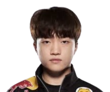
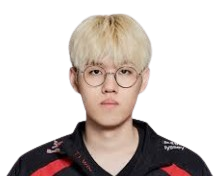
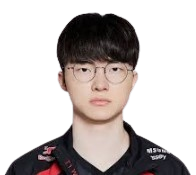
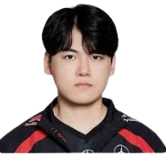
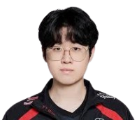

Keria
- Keria, rođen 2002. godine, talentovani je support iz Južne Koreje.
- Pridružio se T1 timu 2020. godine, brzo postavivši visoke standarde.
-
Njegove veštine u igri,razumevanje situacije i komunikacija sa timom su izvanredne.
-
Keria je poznat po svojoj sposobnosti da igra raznolike šampione.
- Tokom takmičenja, često igra ključne uloge u timskim borbama.
- U LoL-u,u 2024 je produzio ugovor sa T1 nakon osvajanja drugog worlds-a za redom.

Oner
- Oner, rođen 2002. godine, talentovani je jungler iz Južne Koreje.
- Pridružio se T1 timu 2021. godine, brzo stičući priznanje za svoje veštine.
- Onerov agresivni stil igre i donošenje odluka impresionirali su fanove i coacheve(trenere).
- Onerovo vođstvo i timski rad pomogli su T1 timu da obezbedi više pobeda u LCK-u.
- Kao zvezda u usponu, Oner se nastavlja razvijati u vrhunskog džangler
- u 2024 je produzio ugovor sa T1 nakon osvajanja drugog worlds-a za redom

Faker
- Faker, rođen 1996. godine, smatra se najboljim LoL igračem ikada.
- Pridružio se T1 timu 2013. godine, odmah postavljajući visoke standarde.
- Njegova izvanredna veština i razumevanje igre osigurali su brojne titule.
- Faker je osvojio pet Svetska prvenstva, čime je postao legenda, jer to niko nije uradio.
- Njegov stil igre inspiriše mnoge mlade igrače širom sveta,i dalje je na vrhu scene.
- u 2024 je produzio ugovor sa T1 nakon osvajanja drugog worlds-a za redom.

Gumayusi
- Gumayusi, rođen 2002. godine, talentovani je AD carry iz Južne Koreje.
-
Pridružio se T1 timu 2021. godine, brzo se ističući svojim veštinama.
-
Njegov agresivan stil igre, cesti outplay protivnika i preciznost impresioniraju publiku i coacheve(Trenere).
-
Gumayusi je poznat po svojoj sposobnosti da nosi tim u borbama.
- Tokom takmičenja, često je ključni faktor u T1 pobedama.
- u 2024 je produzio ugovor sa t1 nakon osvajanja drugog worlds-a za redom.

Zeus
- Zeus, rođen 2002. godine, talentovani je top laner iz Južne Koreje.
- Pridružio se T1 timu 2021. godine i brzo stekao reputaciju.
- Njegove veštine u igri i strategija impresioniraju fanove i analitičare.
- Tokom takmičenja, pokazuje izvanredno umeće i odlučnost u borbama.
- Kao mladi igrač, Zeus ima sjajnu budućnost u profesionalnom LoL-u.
- Osvojio je worlds 2 puta za redom i bio u tri finala.Napustio je T1 2024 i otisao u HLE